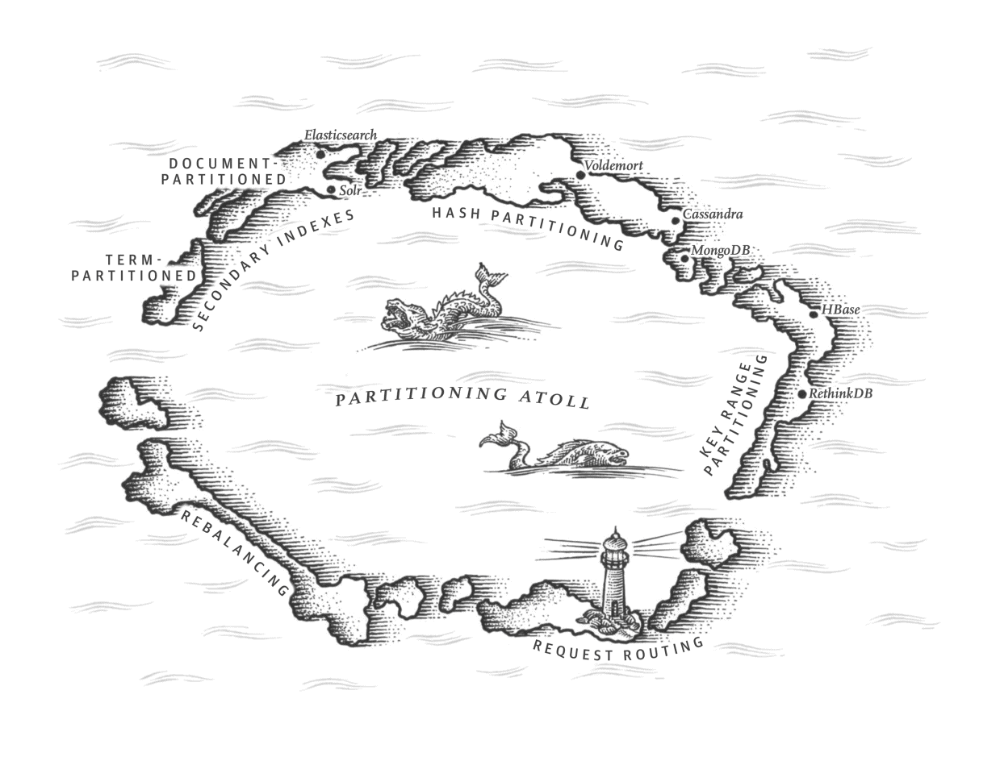
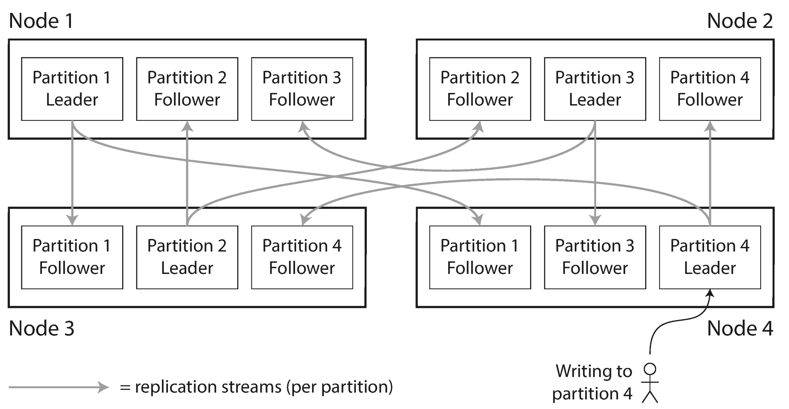
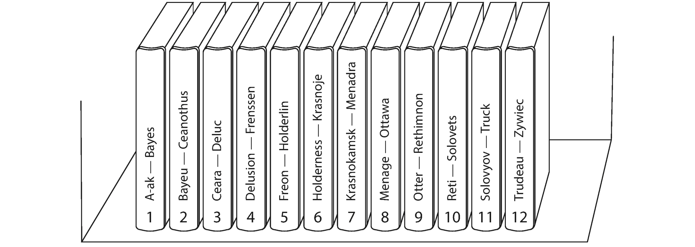
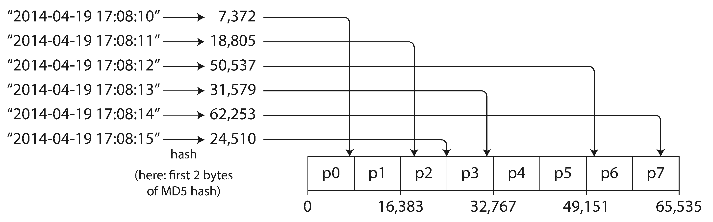
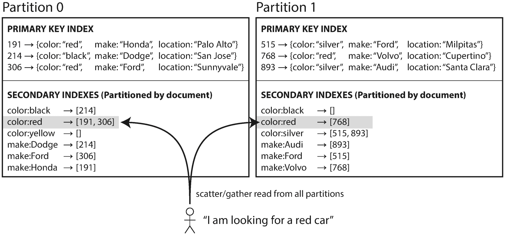
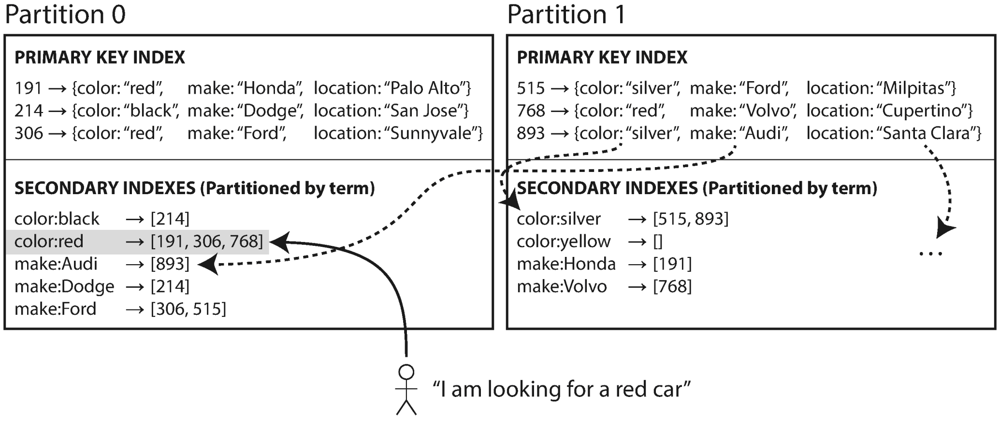
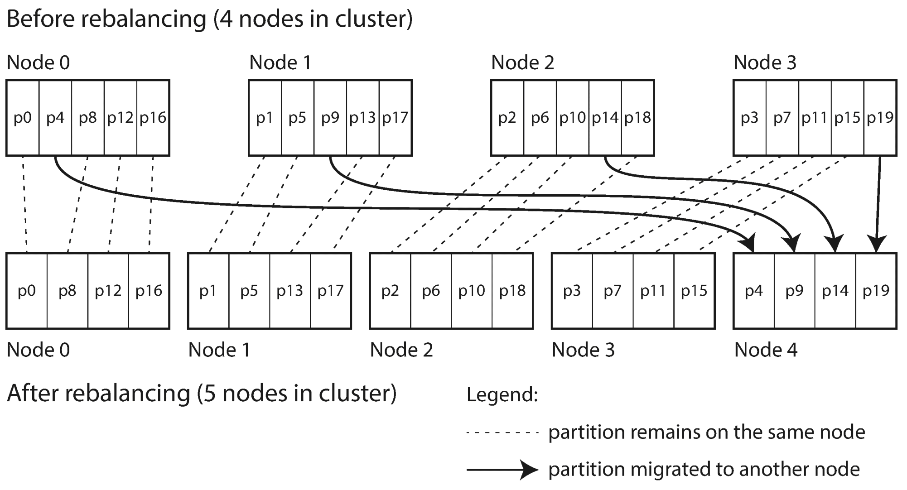
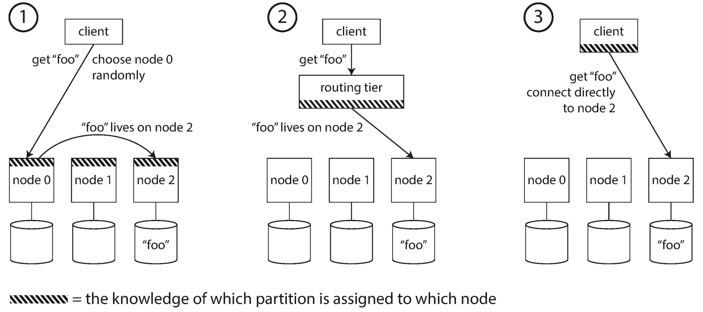
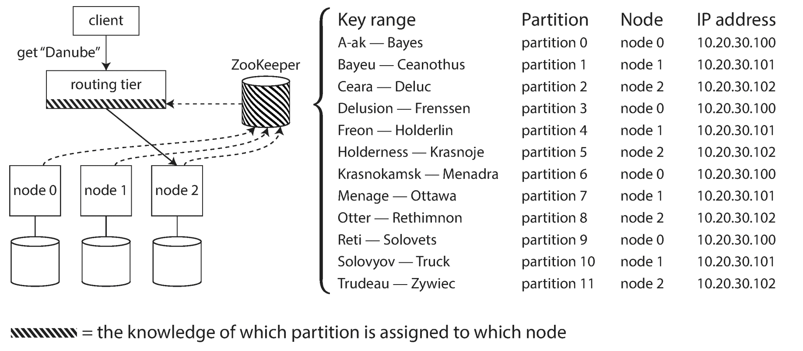

Clearly, we must break away from the sequential and not limit the computers. We must state definitions and provide for priorities and descriptions of data. We must state relationships, not procedures.Grace Murray Hopper, Management and the Computer of the Future (1962)

In Chapter 5 we discussed replication — that is, having multiple copies of the same data on different nodes. For very large datasets, or very high query throughput, that is not sufficient: we need to break the data up into partitions , also known as sharding . i
What we call a partition here is called a shard in MongoDB, Elasticsearch, and SolrCloud; it’s known as a region in HBase, a tablet in Bigtable, a vnode in Cassandra and Riak, and a vBucket in Couchbase. However, partitioning is the most established term, so we’ll stick with that.
Normally, partitions are defined in such a way that each piece of data (each record, row, or document) belongs to exactly one partition. There are various ways of achieving this, which we discuss in depth in this chapter. In effect, each partition is a small database of its own, although the database may support operations that touch multiple partitions at the same time.
The main reason for wanting to partition data is scalability . Different partitions can be placed on different nodes in a shared-nothing cluster (see the introduction to Part II for a definition of shared nothing ). Thus, a large dataset can be distributed across many disks, and the query load can be distributed across many processors.
For queries that operate on a single partition, each node can independently execute the queries for its own partition, so query throughput can be scaled by adding more nodes. Large, complex queries can potentially be parallelized across many nodes, although this gets significantly harder.
Partitioned databases were pioneered in the 1980s by products such as Teradata and Tandem NonStop SQL [1 ], and more recently rediscovered by NoSQL databases and Hadoop-based data warehouses. Some systems are designed for transactional workloads, and others for analytics (see “Transaction Processing or Analytics?” ): this difference affects how the system is tuned, but the fundamentals of partitioning apply to both kinds of workloads.
In this chapter we will first look at different approaches for partitioning large datasets and observe how the indexing of data interacts with partitioning. We’ll then talk about rebalancing, which is necessary if you want to add or remove nodes in your cluster. Finally, we’ll get an overview of how databases route requests to the right partitions and execute queries.
Partitioning is usually combined with replication so that copies of each partition are stored on multiple nodes. This means that, even though each record belongs to exactly one partition, it may still be stored on several different nodes for fault tolerance.
A node may store more than one partition. If a leader–follower replication model is used, the combination of partitioning and replication can look like Figure 6-1 . Each partition’s leader is assigned to one node, and its followers are assigned to other nodes. Each node may be the leader for some partitions and a follower for other partitions.
Everything we discussed in Chapter 5 about replication of databases applies equally to replication of partitions. The choice of partitioning scheme is mostly independent of the choice of replication scheme, so we will keep things simple and ignore replication in this chapter.

Say you have a large amount of data, and you want to partition it. How do you decide which records to store on which nodes?
Our goal with partitioning is to spread the data and the query load evenly across nodes. If every node takes a fair share, then — in theory — 10 nodes should be able to handle 10 times as much data and 10 times the read and write throughput of a single node (ignoring replication for now).
If the partitioning is unfair, so that some partitions have more data or queries than others, we call it skewed . The presence of skew makes partitioning much less effective. In an extreme case, all the load could end up on one partition, so 9 out of 10 nodes are idle and your bottleneck is the single busy node. A partition with disproportionately high load is called a hot spot .
The simplest approach for avoiding hot spots would be to assign records to nodes randomly. That would distribute the data quite evenly across the nodes, but it has a big disadvantage: when you’re trying to read a particular item, you have no way of knowing which node it is on, so you have to query all nodes in parallel.
We can do better. Let’s assume for now that you have a simple key-value data model, in which you always access a record by its primary key. For example, in an old-fashioned paper encyclopedia, you look up an entry by its title; since all the entries are alphabetically sorted by title, you can quickly find the one you’re looking for.
One way of partitioning is to assign a continuous range of keys (from some minimum to some maximum) to each partition, like the volumes of a paper encyclopedia (Figure 6-2 ). If you know the boundaries between the ranges, you can easily determine which partition contains a given key. If you also know which partition is assigned to which node, then you can make your request directly to the appropriate node (or, in the case of the encyclopedia, pick the correct book off the shelf).

The ranges of keys are not necessarily evenly spaced, because your data may not be evenly distributed. For example, in Figure 6-2 , volume 1 contains words starting with A and B, but volume 12 contains words starting with T, U, V, X, Y, and Z. Simply having one volume per two letters of the alphabet would lead to some volumes being much bigger than others. In order to distribute the data evenly, the partition boundaries need to adapt to the data.
The partition boundaries might be chosen manually by an administrator, or the database can choose them automatically (we will discuss choices of partition boundaries in more detail in “Rebalancing Partitions” ). This partitioning strategy is used by Bigtable, its open source equivalent HBase [2 , 3 ], RethinkDB, and MongoDB before version 2.4 [4 ].
Within each partition, we can keep keys in sorted order (see “SSTables and LSM-Trees” ). This has the advantage that range scans are easy, and you can treat the key as a concatenated index in order to fetch several related records in one query (see “Multi-column indexes” ). For example, consider an application that stores data from a network of sensors, where the key is the timestamp of the measurement (year-month-day-hour-minute-second ). Range scans are very useful in this case, because they let you easily fetch, say, all the readings from a particular month.
However, the downside of key range partitioning is that certain access patterns can lead to hot spots. If the key is a timestamp, then the partitions correspond to ranges of time — e.g., one partition per day. Unfortunately, because we write data from the sensors to the database as the measurements happen, all the writes end up going to the same partition (the one for today), so that partition can be overloaded with writes while others sit idle [5 ].
To avoid this problem in the sensor database, you need to use something other than the timestamp as the first element of the key. For example, you could prefix each timestamp with the sensor name so that the partitioning is first by sensor name and then by time. Assuming you have many sensors active at the same time, the write load will end up more evenly spread across the partitions. Now, when you want to fetch the values of multiple sensors within a time range, you need to perform a separate range query for each sensor name.
Because of this risk of skew and hot spots, many distributed datastores use a hash function to determine the partition for a given key.
A good hash function takes skewed data and makes it uniformly distributed. Say you have a 32-bit hash function that takes a string. Whenever you give it a new string, it returns a seemingly random number between 0 and 232 − 1. Even if the input strings are very similar, their hashes are evenly distributed across that range of numbers.
For partitioning purposes, the hash function need not be cryptographically strong: for example, Cassandra and MongoDB use MD5, and Voldemort uses the Fowler–Noll–Vo function. Many programming languages have simple hash functions built in (as they are used for hash tables), but they may not be suitable for partitioning: for example, in Java’s Object.hashCode()
and Ruby’s Object#hash
, the same key may have a different hash value in different processes [6
].
Once you have a suitable hash function for keys, you can assign each partition a range of hashes (rather than a range of keys), and every key whose hash falls within a partition’s range will be stored in that partition. This is illustrated in Figure 6-3 .

This technique is good at distributing keys fairly among the partitions. The partition boundaries can be evenly spaced, or they can be chosen pseudorandomly (in which case the technique is sometimes known as consistent hashing ).
Unfortunately however, by using the hash of the key for partitioning we lose a nice property of key-range partitioning: the ability to do efficient range queries. Keys that were once adjacent are now scattered across all the partitions, so their sort order is lost. In MongoDB, if you have enabled hash-based sharding mode, any range query has to be sent to all partitions [4 ]. Range queries on the primary key are not supported by Riak [9 ], Couchbase [10 ], or Voldemort.
Cassandra achieves a compromise between the two partitioning strategies [11 , 12 , 13 ]. A table in Cassandra can be declared with a compound primary key consisting of several columns. Only the first part of that key is hashed to determine the partition, but the other columns are used as a concatenated index for sorting the data in Cassandra’s SSTables. A query therefore cannot search for a range of values within the first column of a compound key, but if it specifies a fixed value for the first column, it can perform an efficient range scan over the other columns of the key.
The concatenated index approach enables an elegant data model for one-to-many relationships. For example, on a social media site, one user may post many updates. If the primary key for updates is chosen to be (user_id, update_timestamp)
, then you can efficiently retrieve all updates made by a particular user within some time interval, sorted by timestamp. Different users may be stored on different partitions, but within each user, the updates are stored ordered by timestamp on a single partition.
As discussed, hashing a key to determine its partition can help reduce hot spots. However, it can’t avoid them entirely: in the extreme case where all reads and writes are for the same key, you still end up with all requests being routed to the same partition.
This kind of workload is perhaps unusual, but not unheard of: for example, on a social media site, a celebrity user with millions of followers may cause a storm of activity when they do something [14 ]. This event can result in a large volume of writes to the same key (where the key is perhaps the user ID of the celebrity, or the ID of the action that people are commenting on). Hashing the key doesn’t help, as the hash of two identical IDs is still the same.
Today, most data systems are not able to automatically compensate for such a highly skewed workload, so it’s the responsibility of the application to reduce the skew. For example, if one key is known to be very hot, a simple technique is to add a random number to the beginning or end of the key. Just a two-digit decimal random number would split the writes to the key evenly across 100 different keys, allowing those keys to be distributed to different partitions.
However, having split the writes across different keys, any reads now have to do additional work, as they have to read the data from all 100 keys and combine it. This technique also requires additional bookkeeping: it only makes sense to append the random number for the small number of hot keys; for the vast majority of keys with low write throughput this would be unnecessary overhead. Thus, you also need some way of keeping track of which keys are being split.
Perhaps in the future, data systems will be able to automatically detect and compensate for skewed workloads; but for now, you need to think through the trade-offs for your own application.
The partitioning schemes we have discussed so far rely on a key-value data model. If records are only ever accessed via their primary key, we can determine the partition from that key and use it to route read and write requests to the partition responsible for that key.
The situation becomes more complicated if secondary indexes are involved (see also “Other Indexing Structures”
). A secondary index usually doesn’t identify a record uniquely but rather is a way of searching for occurrences of a particular value: find all actions by user 123
, find all articles containing the word hogwash
, find all cars whose color is red
, and so on.
Secondary indexes are the bread and butter of relational databases, and they are common in document databases too. Many key-value stores (such as HBase and Voldemort) have avoided secondary indexes because of their added implementation complexity, but some (such as Riak) have started adding them because they are so useful for data modeling. And finally, secondary indexes are the raison d’être of search servers such as Solr and Elasticsearch.
The problem with secondary indexes is that they don’t map neatly to partitions. There are two main approaches to partitioning a database with secondary indexes: document-based partitioning and term-based partitioning.
For example, imagine you are operating a website for selling used cars (illustrated in Figure 6-4 ). Each listing has a unique ID — call it the document ID — and you partition the database by the document ID (for example, IDs 0 to 499 in partition 0, IDs 500 to 999 in partition 1, etc.).
You want to let users search for cars, allowing them to filter by color and by make, so you need a secondary index on color
and make
(in a document database these would be fields; in a relational database they would be columns). If you have declared the index, the database can perform the indexing automatically.
ii
For example, whenever a red car is added to the database, the database partition automatically adds it to the list of document IDs for the index entry color:red
.

In this indexing approach, each partition is completely separate: each partition maintains its own secondary indexes, covering only the documents in that partition. It doesn’t care what data is stored in other partitions. Whenever you need to write to the database — to add, remove, or update a document — you only need to deal with the partition that contains the document ID that you are writing. For that reason, a document-partitioned index is also known as a local index (as opposed to a global index , described in the next section).
However, reading from a document-partitioned index requires care: unless you have done something special with the document IDs, there is no reason why all the cars with a particular color or a particular make would be in the same partition. In Figure 6-4 , red cars appear in both partition 0 and partition 1. Thus, if you want to search for red cars, you need to send the query to all partitions, and combine all the results you get back.
This approach to querying a partitioned database is sometimes known as scatter/gather , and it can make read queries on secondary indexes quite expensive. Even if you query the partitions in parallel, scatter/gather is prone to tail latency amplification (see “Percentiles in Practice” ). Nevertheless, it is widely used: MongoDB, Riak [15 ], Cassandra [16 ], Elasticsearch [17 ], SolrCloud [18 ], and VoltDB [19 ] all use document-partitioned secondary indexes. Most database vendors recommend that you structure your partitioning scheme so that secondary index queries can be served from a single partition, but that is not always possible, especially when you’re using multiple secondary indexes in a single query (such as filtering cars by color and by make at the same time).

Rather than each partition having its own secondary index (a local index ), we can construct a global index that covers data in all partitions. However, we can’t just store that index on one node, since it would likely become a bottleneck and defeat the purpose of partitioning. A global index must also be partitioned, but it can be partitioned differently from the primary key index.
Figure 6-5
illustrates what this could look like: red cars from all partitions appear under color:red
in the index, but the index is partitioned so that colors starting with the letters a
to r
appear in partition 0 and colors starting with s
to z
appear in partition 1. The index on the make of car is partitioned similarly (with the partition boundary being between f
and h
).
We call this kind of index term-partitioned
, because the term we’re looking for determines the partition of the index. Here, a term would be color:red
, for example. The name term
comes from full-text indexes (a particular kind of secondary index), where the terms are all the words that occur in a document.
As before, we can partition the index by the term itself, or using a hash of the term. Partitioning by the term itself can be useful for range scans (e.g., on a numeric property, such as the asking price of the car), whereas partitioning on a hash of the term gives a more even distribution of load.
The advantage of a global (term-partitioned) index over a document-partitioned index is that it can make reads more efficient: rather than doing scatter/gather over all partitions, a client only needs to make a request to the partition containing the term that it wants. However, the downside of a global index is that writes are slower and more complicated, because a write to a single document may now affect multiple partitions of the index (every term in the document might be on a different partition, on a different node).
In an ideal world, the index would always be up to date, and every document written to the database would immediately be reflected in the index. However, in a term-partitioned index, that would require a distributed transaction across all partitions affected by a write, which is not supported in all databases (see Chapter 7 and Chapter 9 ).
In practice, updates to global secondary indexes are often asynchronous (that is, if you read the index shortly after a write, the change you just made may not yet be reflected in the index). For example, Amazon DynamoDB states that its global secondary indexes are updated within a fraction of a second in normal circumstances, but may experience longer propagation delays in cases of faults in the infrastructure [20 ].
Other uses of global term-partitioned indexes include Riak’s search feature [21 ] and the Oracle data warehouse, which lets you choose between local and global indexing [22 ]. We will return to the topic of implementing term-partitioned secondary indexes in Chapter 12 .
Over time, things change in a database:
All of these changes call for data and requests to be moved from one node to another. The process of moving load from one node in the cluster to another is called rebalancing .
No matter which partitioning scheme is used, rebalancing is usually expected to meet some minimum requirements:
There are a few different ways of assigning partitions to nodes [23 ]. Let’s briefly discuss each in turn.
When partitioning by the hash of a key, we said earlier (Figure 6-3 ) that it’s best to divide the possible hashes into ranges and assign each range to a partition (e.g., assign key to partition 0 if 0 ≤ hash (key ) < b 0 , to partition 1 if b 0 ≤ hash (key ) < b 1 , etc.).
Perhaps you wondered why we don’t just use mod
(the %
operator in many programming languages). For example, hash
(key
) mod
10 would return a number between 0 and 9 (if we write the hash as a decimal number, the hash mod
10 would be the last digit). If we have 10 nodes, numbered 0 to 9, that seems like an easy way of assigning each key to a node.
The problem with the mod N approach is that if the number of nodes N changes, most of the keys will need to be moved from one node to another. For example, say hash (key ) = 123456. If you initially have 10 nodes, that key starts out on node 6 (because 123456 mod 10 = 6). When you grow to 11 nodes, the key needs to move to node 3 (123456 mod 11 = 3), and when you grow to 12 nodes, it needs to move to node 0 (123456 mod 12 = 0). Such frequent moves make rebalancing excessively expensive.
We need an approach that doesn’t move data around more than necessary.
Fortunately, there is a fairly simple solution: create many more partitions than there are nodes, and assign several partitions to each node. For example, a database running on a cluster of 10 nodes may be split into 1,000 partitions from the outset so that approximately 100 partitions are assigned to each node.
Now, if a node is added to the cluster, the new node can steal a few partitions from every existing node until partitions are fairly distributed once again. This process is illustrated in Figure 6-6 . If a node is removed from the cluster, the same happens in reverse.
Only entire partitions are moved between nodes. The number of partitions does not change, nor does the assignment of keys to partitions. The only thing that changes is the assignment of partitions to nodes. This change of assignment is not immediate — it takes some time to transfer a large amount of data over the network — so the old assignment of partitions is used for any reads and writes that happen while the transfer is in progress.

In principle, you can even account for mismatched hardware in your cluster: by assigning more partitions to nodes that are more powerful, you can force those nodes to take a greater share of the load.
This approach to rebalancing is used in Riak [15 ], Elasticsearch [24 ], Couchbase [10 ], and Voldemort [25 ].
In this configuration, the number of partitions is usually fixed when the database is first set up and not changed afterward. Although in principle it’s possible to split and merge partitions (see the next section), a fixed number of partitions is operationally simpler, and so many fixed-partition databases choose not to implement partition splitting. Thus, the number of partitions configured at the outset is the maximum number of nodes you can have, so you need to choose it high enough to accommodate future growth. However, each partition also has management overhead, so it’s counterproductive to choose too high a number.
Choosing the right number of partitions is difficult if the total size of the dataset is highly variable (for example, if it starts small but may grow much larger over time). Since each partition contains a fixed fraction of the total data, the size of each partition grows proportionally to the total amount of data in the cluster. If partitions are very large, rebalancing and recovery from node failures become expensive. But if partitions are too small, they incur too much overhead. The best performance is achieved when the size of partitions is “just right,” neither too big nor too small, which can be hard to achieve if the number of partitions is fixed but the dataset size varies.
For databases that use key range partitioning (see “Partitioning by Key Range” ), a fixed number of partitions with fixed boundaries would be very inconvenient: if you got the boundaries wrong, you could end up with all of the data in one partition and all of the other partitions empty. Reconfiguring the partition boundaries manually would be very tedious.
For that reason, key range–partitioned databases such as HBase and RethinkDB create partitions dynamically. When a partition grows to exceed a configured size (on HBase, the default is 10 GB), it is split into two partitions so that approximately half of the data ends up on each side of the split [26 ]. Conversely, if lots of data is deleted and a partition shrinks below some threshold, it can be merged with an adjacent partition. This process is similar to what happens at the top level of a B-tree (see “B-Trees” ).
Each partition is assigned to one node, and each node can handle multiple partitions, like in the case of a fixed number of partitions. After a large partition has been split, one of its two halves can be transferred to another node in order to balance the load. In the case of HBase, the transfer of partition files happens through HDFS, the underlying distributed filesystem [3 ].
An advantage of dynamic partitioning is that the number of partitions adapts to the total data volume. If there is only a small amount of data, a small number of partitions is sufficient, so overheads are small; if there is a huge amount of data, the size of each individual partition is limited to a configurable maximum [23 ].
However, a caveat is that an empty database starts off with a single partition, since there is no a priori information about where to draw the partition boundaries. While the dataset is small — until it hits the point at which the first partition is split — all writes have to be processed by a single node while the other nodes sit idle. To mitigate this issue, HBase and MongoDB allow an initial set of partitions to be configured on an empty database (this is called pre-splitting ). In the case of key-range partitioning, pre-splitting requires that you already know what the key distribution is going to look like [4 , 26 ].
Dynamic partitioning is not only suitable for key range–partitioned data, but can equally well be used with hash-partitioned data. MongoDB since version 2.4 supports both key-range and hash partitioning, and it splits partitions dynamically in either case.
With dynamic partitioning, the number of partitions is proportional to the size of the dataset, since the splitting and merging processes keep the size of each partition between some fixed minimum and maximum. On the other hand, with a fixed number of partitions, the size of each partition is proportional to the size of the dataset. In both of these cases, the number of partitions is independent of the number of nodes.
A third option, used by Cassandra and Ketama, is to make the number of partitions proportional to the number of nodes — in other words, to have a fixed number of partitions per node [23 , 27 , 28 ]. In this case, the size of each partition grows proportionally to the dataset size while the number of nodes remains unchanged, but when you increase the number of nodes, the partitions become smaller again. Since a larger data volume generally requires a larger number of nodes to store, this approach also keeps the size of each partition fairly stable.
When a new node joins the cluster, it randomly chooses a fixed number of existing partitions to split, and then takes ownership of one half of each of those split partitions while leaving the other half of each partition in place. The randomization can produce unfair splits, but when averaged over a larger number of partitions (in Cassandra, 256 partitions per node by default), the new node ends up taking a fair share of the load from the existing nodes. Cassandra 3.0 introduced an alternative rebalancing algorithm that avoids unfair splits [29 ].
Picking partition boundaries randomly requires that hash-based partitioning is used (so the boundaries can be picked from the range of numbers produced by the hash function). Indeed, this approach corresponds most closely to the original definition of consistent hashing [7 ] (see “Consistent Hashing” ). Newer hash functions can achieve a similar effect with lower metadata overhead [8 ].
There is one important question with regard to rebalancing that we have glossed over: does the rebalancing happen automatically or manually?
There is a gradient between fully automatic rebalancing (the system decides automatically when to move partitions from one node to another, without any administrator interaction) and fully manual (the assignment of partitions to nodes is explicitly configured by an administrator, and only changes when the administrator explicitly reconfigures it). For example, Couchbase, Riak, and Voldemort generate a suggested partition assignment automatically, but require an administrator to commit it before it takes effect.
Fully automated rebalancing can be convenient, because there is less operational work to do for normal maintenance. However, it can be unpredictable. Rebalancing is an expensive operation, because it requires rerouting requests and moving a large amount of data from one node to another. If it is not done carefully, this process can overload the network or the nodes and harm the performance of other requests while the rebalancing is in progress.
Such automation can be dangerous in combination with automatic failure detection. For example, say one node is overloaded and is temporarily slow to respond to requests. The other nodes conclude that the overloaded node is dead, and automatically rebalance the cluster to move load away from it. This puts additional load on the overloaded node, other nodes, and the network — making the situation worse and potentially causing a cascading failure.
For that reason, it can be a good thing to have a human in the loop for rebalancing. It’s slower than a fully automatic process, but it can help prevent operational surprises.
We have now partitioned our dataset across multiple nodes running on multiple machines. But there remains an open question: when a client wants to make a request, how does it know which node to connect to? As partitions are rebalanced, the assignment of partitions to nodes changes. Somebody needs to stay on top of those changes in order to answer the question: if I want to read or write the key “foo”, which IP address and port number do I need to connect to?
This is an instance of a more general problem called service discovery , which isn’t limited to just databases. Any piece of software that is accessible over a network has this problem, especially if it is aiming for high availability (running in a redundant configuration on multiple machines). Many companies have written their own in-house service discovery tools, and many of these have been released as open source [30 ].
On a high level, there are a few different approaches to this problem (illustrated in Figure 6-7 ):
In all cases, the key problem is: how does the component making the routing decision (which may be one of the nodes, or the routing tier, or the client) learn about changes in the assignment of partitions to nodes?

This is a challenging problem, because it is important that all participants agree — otherwise requests would be sent to the wrong nodes and not handled correctly. There are protocols for achieving consensus in a distributed system, but they are hard to implement correctly (see Chapter 9 ).
Many distributed data systems rely on a separate coordination service such as ZooKeeper to keep track of this cluster metadata, as illustrated in Figure 6-8 . Each node registers itself in ZooKeeper, and ZooKeeper maintains the authoritative mapping of partitions to nodes. Other actors, such as the routing tier or the partitioning-aware client, can subscribe to this information in ZooKeeper. Whenever a partition changes ownership, or a node is added or removed, ZooKeeper notifies the routing tier so that it can keep its routing information up to date.

For example, LinkedIn’s Espresso uses Helix [31 ] for cluster management (which in turn relies on ZooKeeper), implementing a routing tier as shown in Figure 6-8 . HBase, SolrCloud, and Kafka also use ZooKeeper to track partition assignment. MongoDB has a similar architecture, but it relies on its own config server implementation and mongos daemons as the routing tier.
Cassandra and Riak take a different approach: they use a gossip protocol among the nodes to disseminate any changes in cluster state. Requests can be sent to any node, and that node forwards them to the appropriate node for the requested partition (approach 1 in Figure 6-7 ). This model puts more complexity in the database nodes but avoids the dependency on an external coordination service such as ZooKeeper.
Couchbase does not rebalance automatically, which simplifies the design. Normally it is configured with a routing tier called moxi , which learns about routing changes from the cluster nodes [32 ].
When using a routing tier or when sending requests to a random node, clients still need to find the IP addresses to connect to. These are not as fast-changing as the assignment of partitions to nodes, so it is often sufficient to use DNS for this purpose.
So far we have focused on very simple queries that read or write a single key (plus scatter/gather queries in the case of document-partitioned secondary indexes). This is about the level of access supported by most NoSQL distributed datastores.
However, massively parallel processing (MPP) relational database products, often used for analytics, are much more sophisticated in the types of queries they support. A typical data warehouse query contains several join, filtering, grouping, and aggregation operations. The MPP query optimizer breaks this complex query into a number of execution stages and partitions, many of which can be executed in parallel on different nodes of the database cluster. Queries that involve scanning over large parts of the dataset particularly benefit from such parallel execution.
Fast parallel execution of data warehouse queries is a specialized topic, and given the business importance of analytics, it receives a lot of commercial interest. We will discuss some techniques for parallel query execution in Chapter 10 . For a more detailed overview of techniques used in parallel databases, please see the references [1 , 33 ].
In this chapter we explored different ways of partitioning a large dataset into smaller subsets. Partitioning is necessary when you have so much data that storing and processing it on a single machine is no longer feasible.
The goal of partitioning is to spread the data and query load evenly across multiple machines, avoiding hot spots (nodes with disproportionately high load). This requires choosing a partitioning scheme that is appropriate to your data, and rebalancing the partitions when nodes are added to or removed from the cluster.
We discussed two main approaches to partitioning:
Hybrid approaches are also possible, for example with a compound key: using one part of the key to identify the partition and another part for the sort order.
We also discussed the interaction between partitioning and secondary indexes. A secondary index also needs to be partitioned, and there are two methods:
Finally, we discussed techniques for routing queries to the appropriate partition, which range from simple partition-aware load balancing to sophisticated parallel query execution engines.
By design, every partition operates mostly independently — that’s what allows a partitioned database to scale to multiple machines. However, operations that need to write to several partitions can be difficult to reason about: for example, what happens if the write to one partition succeeds, but another fails? We will address that question in the following chapters.
i Partitioning, as discussed in this chapter, is a way of intentionally breaking a large database down into smaller ones. It has nothing to do with network partitions (netsplits), a type of fault in the network between nodes. We will discuss such faults in Chapter 8 .
ii If your database only supports a key-value model, you might be tempted to implement a secondary index yourself by creating a mapping from values to document IDs in application code. If you go down this route, you need to take great care to ensure your indexes remain consistent with the underlying data. Race conditions and intermittent write failures (where some changes were saved but others weren’t) can very easily cause the data to go out of sync — see “The need for multi-object transactions” .
[1 ] David J. DeWitt and Jim N. Gray: “Parallel Database Systems: The Future of High Performance Database Systems ,” Communications of the ACM , volume 35, number 6, pages 85–98, June 1992. doi:10.1145/129888.129894
[2 ] Lars George: “HBase vs. BigTable Comparison ,” larsgeorge.com , November 2009.
[3 ] “The Apache HBase Reference Guide ,” Apache Software Foundation, hbase.apache.org , 2014.
[4 ] MongoDB, Inc.: “New Hash-Based Sharding Feature in MongoDB 2.4 ,” blog.mongodb.org , April 10, 2013.
[5 ] Ikai Lan: “App Engine Datastore Tip: Monotonically Increasing Values Are Bad ,” ikaisays.com , January 25, 2011.
[6 ] Martin Kleppmann: “Java’s hashCode Is Not Safe for Distributed Systems ,” martin.kleppmann.com , June 18, 2012.
[7 ] David Karger, Eric Lehman, Tom Leighton, et al.: “Consistent Hashing and Random Trees: Distributed Caching Protocols for Relieving Hot Spots on the World Wide Web ,” at 29th Annual ACM Symposium on Theory of Computing (STOC), pages 654–663, 1997. doi:10.1145/258533.258660
[8 ] John Lamping and Eric Veach: “A Fast, Minimal Memory, Consistent Hash Algorithm ,” arxiv.org , June 2014.
[9 ] Eric Redmond: “A Little Riak Book ,” Version 1.4.0, Basho Technologies, September 2013.
[10 ] “Couchbase 2.5 Administrator Guide ,” Couchbase, Inc., 2014.
[11 ] Avinash Lakshman and Prashant Malik: “Cassandra – A Decentralized Structured Storage System ,” at 3rd ACM SIGOPS International Workshop on Large Scale Distributed Systems and Middleware (LADIS), October 2009.
[12 ] Jonathan Ellis: “Facebook’s Cassandra Paper, Annotated and Compared to Apache Cassandra 2.0 ,” datastax.com , September 12, 2013.
[13 ] “Introduction to Cassandra Query Language ,” DataStax, Inc., 2014.
[14 ] Samuel Axon: “3% of Twitter’s Servers Dedicated to Justin Bieber ,” mashable.com , September 7, 2010.
[15 ] “Riak 1.4.8 Docs ,” Basho Technologies, Inc., 2014.
[16 ] Richard Low: “The Sweet Spot for Cassandra Secondary Indexing ,” wentnet.com , October 21, 2013.
[17 ] Zachary Tong: “Customizing Your Document Routing ,” elasticsearch.org , June 3, 2013.
[18 ] “Apache Solr Reference Guide ,” Apache Software Foundation, 2014.
[19 ] Andrew Pavlo: “H-Store Frequently Asked Questions ,” hstore.cs.brown.edu , October 2013.
[20 ] “Amazon DynamoDB Developer Guide ,” Amazon Web Services, Inc., 2014.
[21 ] Rusty Klophaus: “Difference Between 2I and Search ,” email to riak-users mailing list, lists.basho.com , October 25, 2011.
[22 ] Donald K. Burleson: “Object Partitioning in Oracle ,” dba-oracle.com , November 8, 2000.
[23 ] Eric Evans: “Rethinking Topology in Cassandra ,” at ApacheCon Europe , November 2012.
[24 ] Rafał Kuć: “Reroute API Explained ,” elasticsearchserverbook.com , September 30, 2013.
[25 ] “Project Voldemort Documentation ,” project-voldemort.com .
[26 ] Enis Soztutar: “Apache HBase Region Splitting and Merging ,” hortonworks.com , February 1, 2013.
[27 ] Brandon Williams: “Virtual Nodes in Cassandra 1.2 ,” datastax.com , December 4, 2012.
[28 ] Richard Jones: “libketama: Consistent Hashing Library for Memcached Clients ,” metabrew.com , April 10, 2007.
[29 ] Branimir Lambov: “New Token Allocation Algorithm in Cassandra 3.0 ,” datastax.com , January 28, 2016.
[30 ] Jason Wilder: “Open-Source Service Discovery ,” jasonwilder.com , February 2014.
[31 ] Kishore Gopalakrishna, Shi Lu, Zhen Zhang, et al.: “Untangling Cluster Management with Helix ,” at ACM Symposium on Cloud Computing (SoCC), October 2012. doi:10.1145/2391229.2391248
[32 ] “Moxi 1.8 Manual ,” Couchbase, Inc., 2014.
[33 ] Shivnath Babu and Herodotos Herodotou: “Massively Parallel Databases and MapReduce Systems ,” Foundations and Trends in Databases , volume 5, number 1, pages 1–104, November 2013. doi:10.1561/1900000036